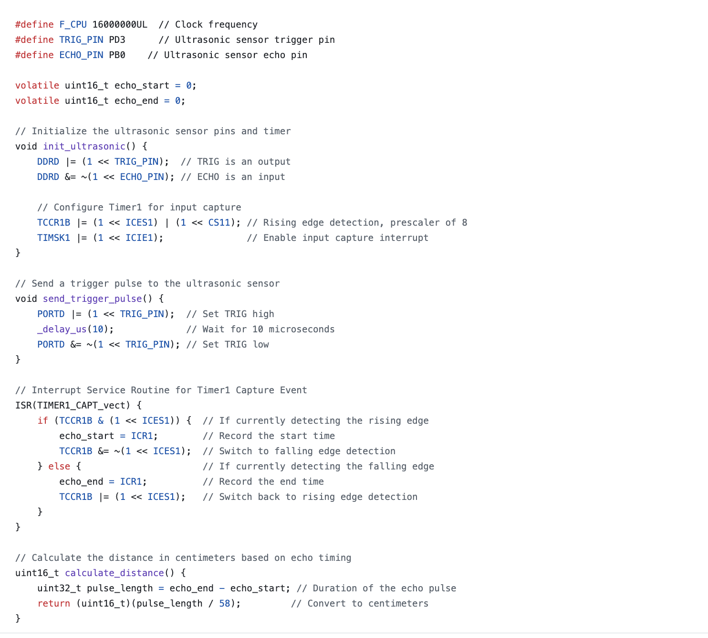

Software Requirements Specification
SRS 01 - The IMU 3-axis acceleration shall be measured with a 16-bit depth every 100 milliseconds ±10 milliseconds.
SRS 02 - System and alarm time switching function
- Finished
- Users can switch between System and alarm time switching function.
- The system shall allow users to switch between system time setting and alarm time setting modes.
SRS 03 - Motor control and timing logic
- Finished
- The motor begins moving away from the user as the alarm time approaches.
SRS 04 - Distance sensing functionality
- Finished
- The system detects obstacles.
- The system adjusts its movement path to avoid collisions.

SRS 05 - User interface control
- Finished
- The system is equipped with buttons for setting time, switching modes, and resetting the system.
SRS 06 - Low power management
- Abandoned
- When the display and movement system are not in use, the device shall enter low power mode to conserve energy.
SRS 07 - Real Time Clock
- Finished
- The RTC module ensures precise timekeeping and accurate alarm scheduling.
Back to home page